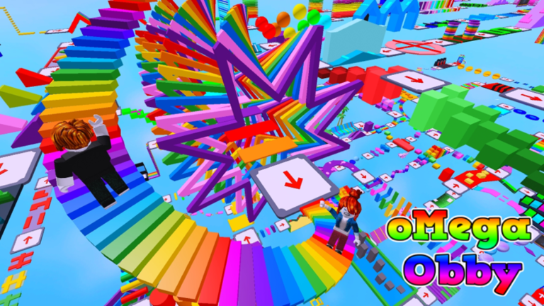
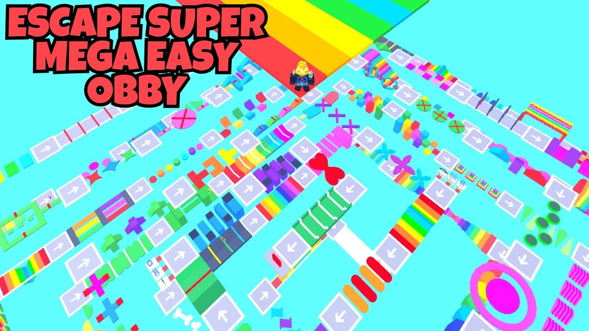
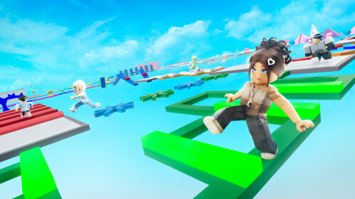

My favorite video game
what is a obby
An Obby is an obstacle course (or a parkour course), in which the Player must come across and overcome a series of obstacles to complete the game. The Obstacle courses include checkpoints at each stage or level. They are common in Roblox and a lot of fun!
why is it called a obby?
Obby means obstacle course it came from the first military groups on roblox like FEAR. Obby basically is just a nickname for a obstacle course. Obby is just short for Obstacle Course. It's hard to say when it started being shortened to Obby, but I can totally see why it became common to shorten it. The thing is that these games were popular on Roblox very early on (2007-2009), and Parkour itself didn't really become popular until 2010ish.

is it hard
The obby challenge is easy and hard at the same time. Use your superior gaming skills to glide through the super amazing fun levels and have the experience of a lifetime. Be careful though, all this abundance of fun will come at a cost.
 what is the point of it
Mega Easy Obby is a parkour platformer in which players need to pass various challenges. In other words, players need to walk or jump over blocks without falling down. There are 825 unique stages in the game and after each stage, players get a respawn point and crystals that can be spent in the game store.
how many rounds are there?
Mega Easy Obby is an adventure platformer game available on Roblox. The game features a total of 825 unique and exciting stages for players to conquer. Mega Easy Obby is widely regarded as one of the best parkour titles available on the platform.